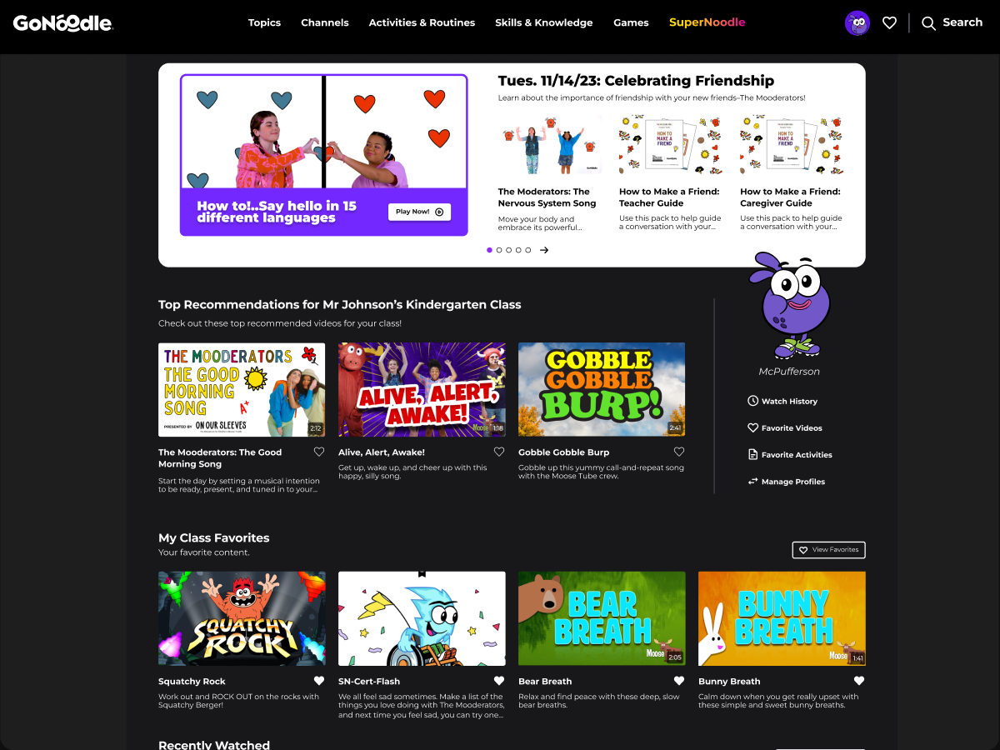
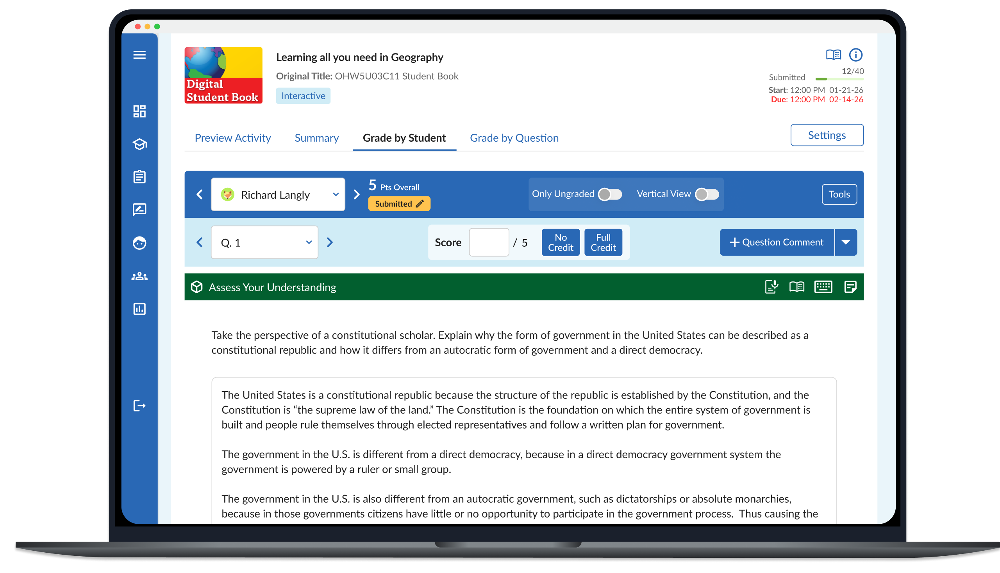
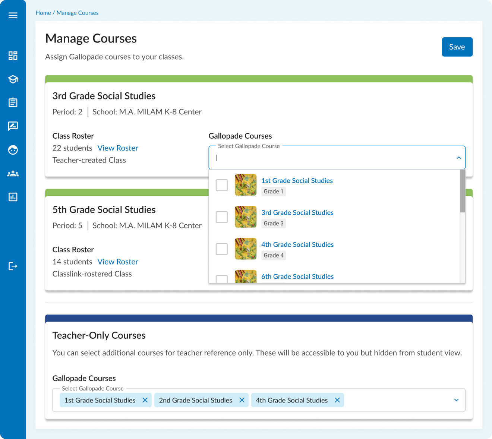
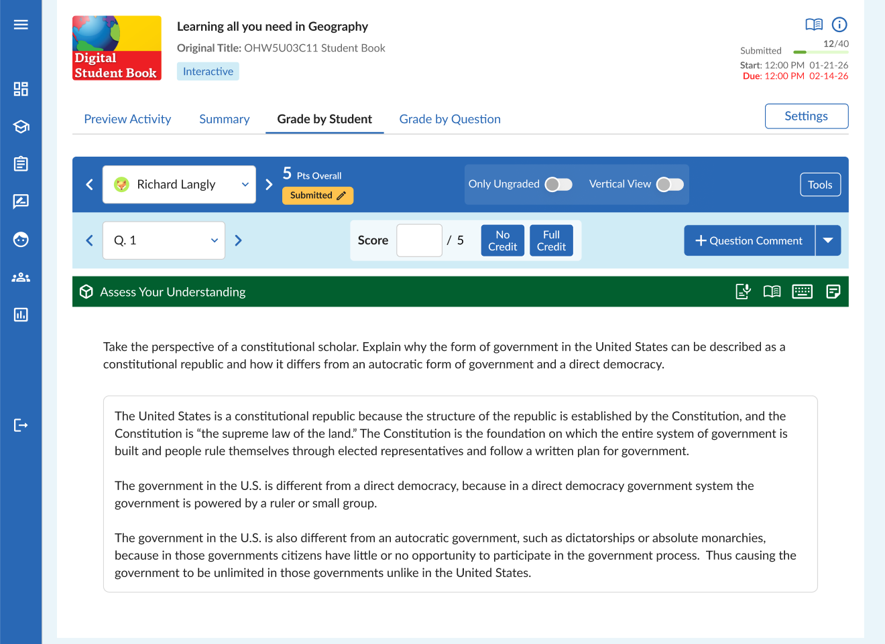
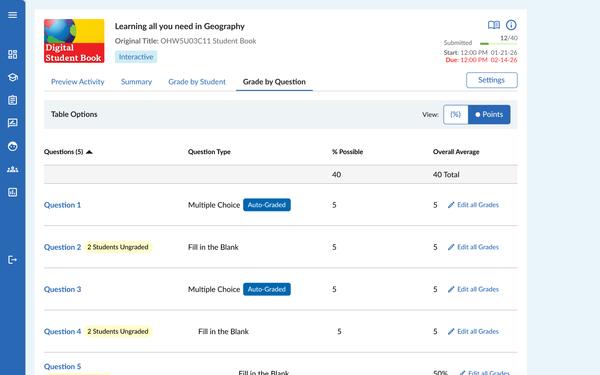
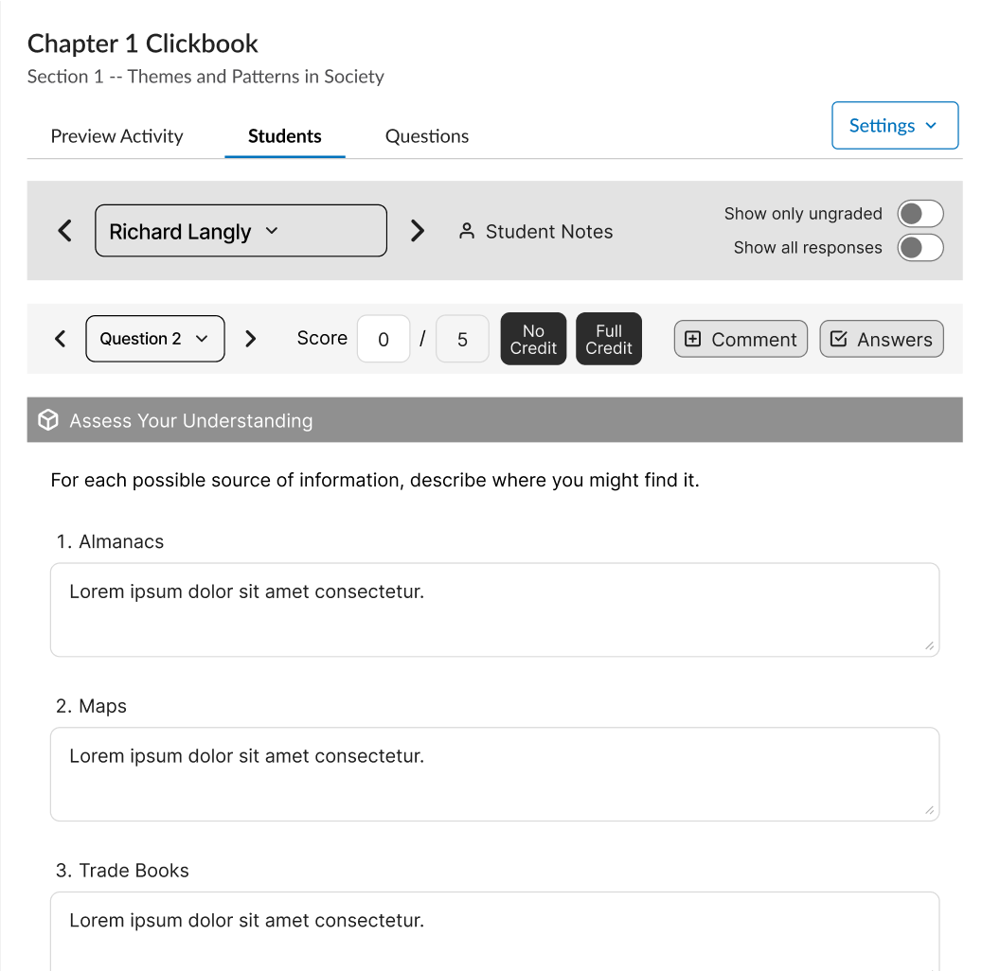

Redesigning Gallopade's Most Critical Teacher Workflows

The Problem
Teachers who use Gallopade didn't choose it, their district did. When a mandated product arrives on top of an already maxed out workload, there's little grace period. A confusing first hour becomes a complaint to the district, and enough complaints mean a lost renewal.
Two workflows were carrying much of that risk. Course setup was technically complex and high-stakes: A wrong turn meant grades didn't sync, rosters didn't load, and teachers stopped using the product. Grading had accumulated enough steps that teachers were opting out of manually-graded questions entirely.
The Solution

These aren't stylish designs, but they shouldn't be. This is a high-stakes process that should be as easy and fast as possible for busy teachers.
For course setup, we streamlined a centralized starting point: A guided, structured workflow that replaced a complex, open-ended process with clear steps and appropriate guardrails. The design makes the right path easy to follow and hard to accidentally leave.
For this process I worked closely with the client's engineering team, to fully understand the constraints we were working under. In the end, we were able to eliminate many of the decisions the user needed to make, prefilling options and only showing data relevant to them.


For grading, we stripped away friction. The redesigned workflow significantly reduced the steps required to grade a student assessment. Teachers could be grading hundreds of students in an assignment, with thousands of total questions they need to get through. Every click adds up.
The Impact
The results of the project showed up in support numbers. Searches that had clustered around basic questions like "can't find course" gave way to more specific questions like "hide courses" and "how to release grades." That shows that users cleared the initial hurdle and are now trying to do more with the product.
75%
Drop in views for help articles directly related to course setup
42%
Reduction in overall per-capita help searches
The Process
The product teachers didn't choose

This was Gallopade's first engagement with an external UX team. Part of our job was demonstrating what a structured UX process looks like and how it produces different outcomes.
We started with the people closest to users: Customer experience reps and sales associates who field teacher questions every day. These conversations helped us understand the real pain points, what teachers were actually calling about. From there, we moved through multiple rounds of design with weekly client check-ins, validated with real users through moderated testing on Figma prototypes, and worked directly with engineering through implementation.
Keeping engineering in the room
Engineers were in every meeting from the start. Keeping engineering in the room meant we were designing toward reality throughout, and the engineers were able to share their own ideas.
Release timing
Releasing during the off-season gave teachers time to encounter the new flows before the pressure of an active school year, gave the training team time to prepare, and let the new version become the version teachers encountered first rather than a disruptive change arriving mid-semester.
Leading the engagement
I led the project alongside one of the associate designers I directly manage. We divided the flows between us, with me overseeing the overarching work and helping them develop client relationship skills, part of the ongoing mentorship and goal-setting I do with direct reports.
Reflection
A challenge with this project was finding the right rhythm for a team that hadn't worked with an external UX partner before. Early on, we went through several rounds of iteration on how we were delivering designs, finding the right level of annotation and the right format for handoff, before landing on something that worked well for everyone.
If I were doing it again, I'd invest even more time upfront, discussing how we were going to work together and hand off designs, rather than assuming our process would translate naturally.
I'd also advocate earlier for more structured post-release measurement. The help search data was useful, but it was the best available option rather than a purpose-built feedback mechanism. Building even a lightweight analytics monitoring plan into the project from the start would have produced better signals after release.